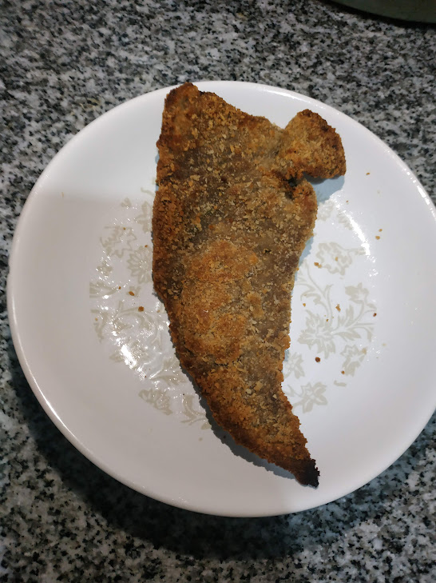

Milanesa
Home

Milanesa argentina con pan rallado, la receta clasica, frita, como dios y la patria lo demandan. Y si no te gusta, que el pueblo argentino te condene
A continuación, la receta en unos simples pasos
Ingredientes:
- Pan rallado (500g)
- Cuadrada o nalga (1kg)
- Ajo
- Perejil
- Huevos (3)
Pasos:
- Lavarse las manos, no sea cosa que se caiga algún pendejo
- En un bowl, batir los tres huevos junto con el ajo y el perejil previamente picados
- Agregar los filetes, salpimentar a gusto, mezclar bien y dejar reposar por 1 hora en la heladera
- En un recipiente amplio colocar el pan rallado, luego, pasar cada uno de los filetes presionando fuerte para que el pan se pegue
- En una sarten, calentar abundante aceite. Una vez que este bien caliente, freir las milanesas 5 minutos de cada lado
- Escurrir las milanesas en papel absorbente
- Servir con fritas, pure o ensalada y proceder a engordar como un chancho que no desciende